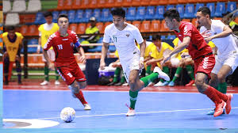
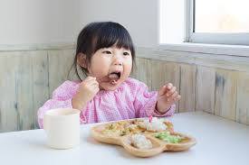

Tentangaku.com
HOBI
1.Futsal
Futsal adalah permainan bola yang dimainkan oleh dua tim, yang masing-masing beranggotakan lima orang. Tujuannya adalah memasukkan bola ke gawang lawan, dengan memanipulasi bola dengan kaki
maka dari itu saya menyukai futsal karena futsal bisa menghilangkan rasa stress dan juga dengan futsal bisa bertemu teman
dan dengan futsal kita bisa mengurangi berat badan pada tubuh sehingga kita bisa manjadi ganteng.
2.Makan
Makan adalah sebetulnya bukan hobi tapi sebuah kebutuhan tapi di sini makan yang saya maksud dalam suatu hobi adalah nyemil jadi makan sama nyemil itu beda kalo makan adalah suatu kebutuhancontohnya makan nasi terus makan ayam dll tapi kalo nyemil adalah kita memakan makanan ringan
3.Rebahan
Rebahan adalah suatu hobi yang saya punya karena rebahan bisa menyegarkan otak saya tau banyak orang yang beroikir rebahan adalah suatu kegiatan yang tidak berguna tapi setiap orang pasti perlu yang namanya rebahan karena setelah melakukan aktifitas yang sangat lama otak kita akan capek badan kit akan capek maka dari itu kita butuh yang nama nya rebahan